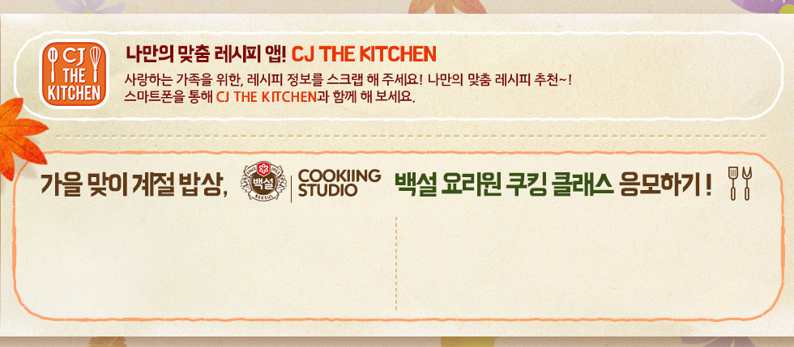

온 가족이 함께하는 가을 계절밥상 레시피를 보고 추천해주세요~
추첨을 통해 111분께 경품의 행운을 드립니다~!
- 모집인원
- 111명
- 응모기간
- 9월 30일~10월 25일
- 당첨자 발표
- 10월 29일



나만의 맞춤 레시피 앱! CJ THE KITCHEN
사랑하는 가족을 위한, 레시피 정보를 스크랩 해주세요! 나만의 맞춤 레시피 추천~!
스마트폰을 통해 CJ THE KITCHEN과 함께 해보세요.
가을 맞이 계절 밥상, 백설 요리원 쿠킹 클래스 응모하기!
- 클래스명
- 추, 감미로운 맛을 담아
- 설명
- 아이를 위한 가을맞이 클래스
- 일시
- 10월 11일 오후 3시
- 클래스명
- 추, 고즈넉한 향을 담아
- 설명
- 주부를 위한 가을맞이 클래스
- 일시
- 10월 13일 오전 11시
우리가족을 위한 CJ제일제당과 함께하는 가을 계절밥상 레시피 중 가장 맛있어 보이는
레시피를 하단 댓글로 남겨주세요. 추첨을 통해 111분께 경품의 행운을 드립니다~!
경품내역
- 자이글 적외선 조리기
- 1명
- 백화점 상품권 5만원권
- 10명
- 영화예매권 2매
- 20명
- 투썸플레이스 아메리카노 R 1잔
- 30명
- CJ 가을밥상 BOX
- 50명
이벤트 당첨 TIP
-
1번
CJ제일제당 해당 레시피에 댓글을 남기면 당첨 확률 UP!!
-
2번
나의 SNS에 이벤트 내용 공유하고, 선택정보란에 URL 남기면 당첨 확률 UP!
제세공과금 22%는 당첨자 본인 부담이며, 경품은 내부사정에 의해 일부 변경될 수 있습니다.